Engine Assembly
Intake:
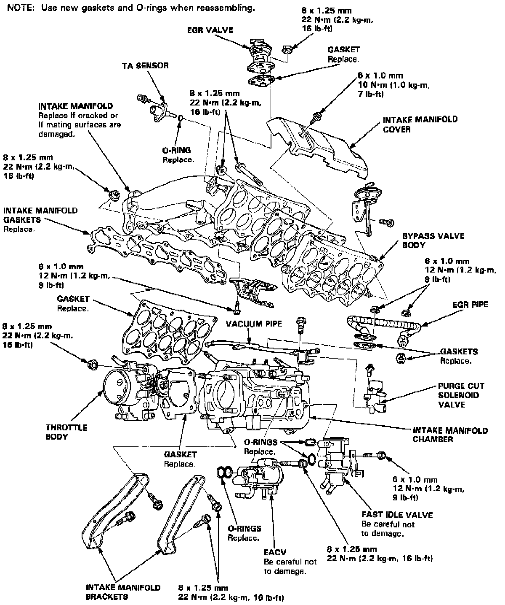
Exhaust Manifold:
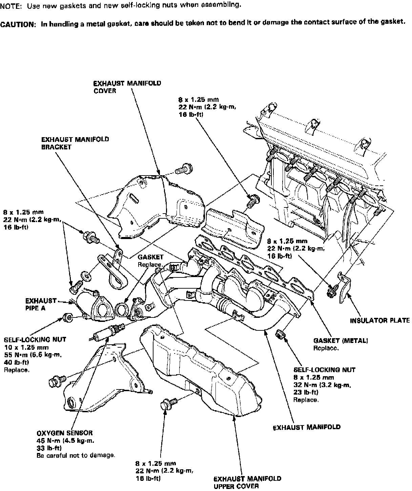
Upper Engine:
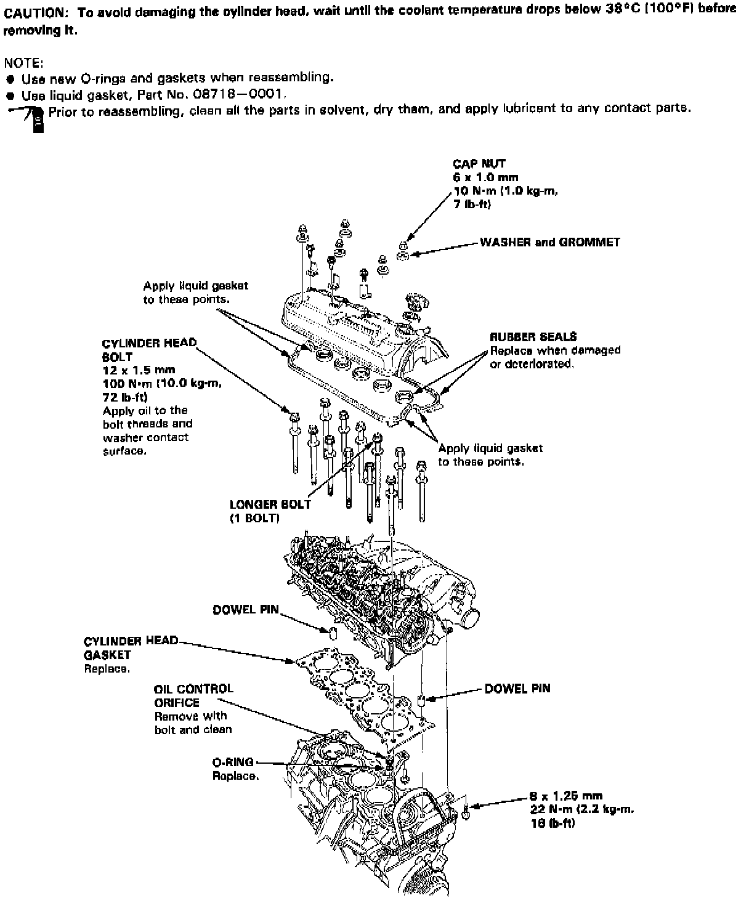
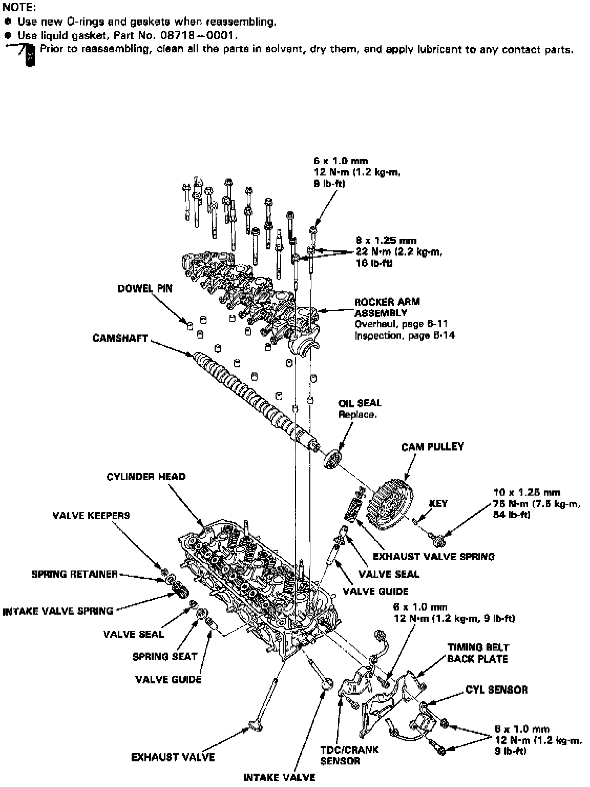
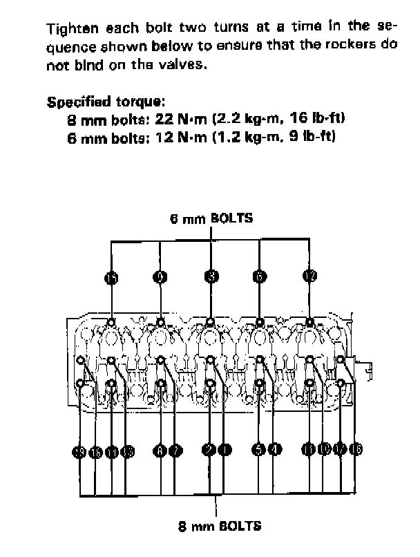
Head Bolt Torque Sequence:
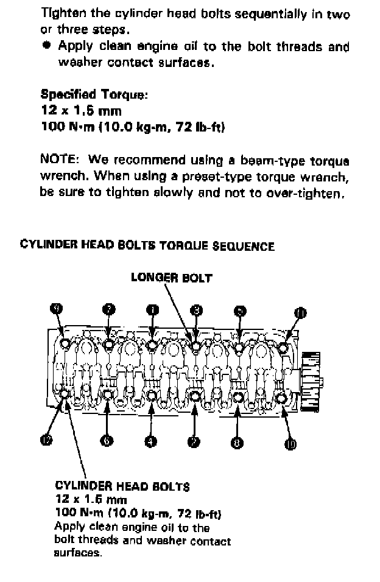
Timing Components:
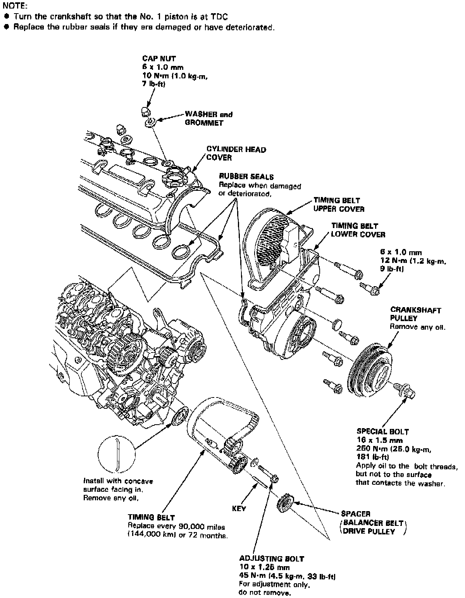
Water Pump:
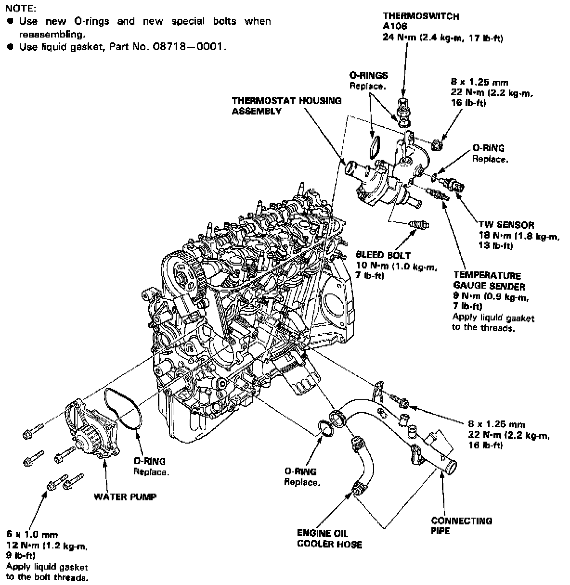
Lower Engine:
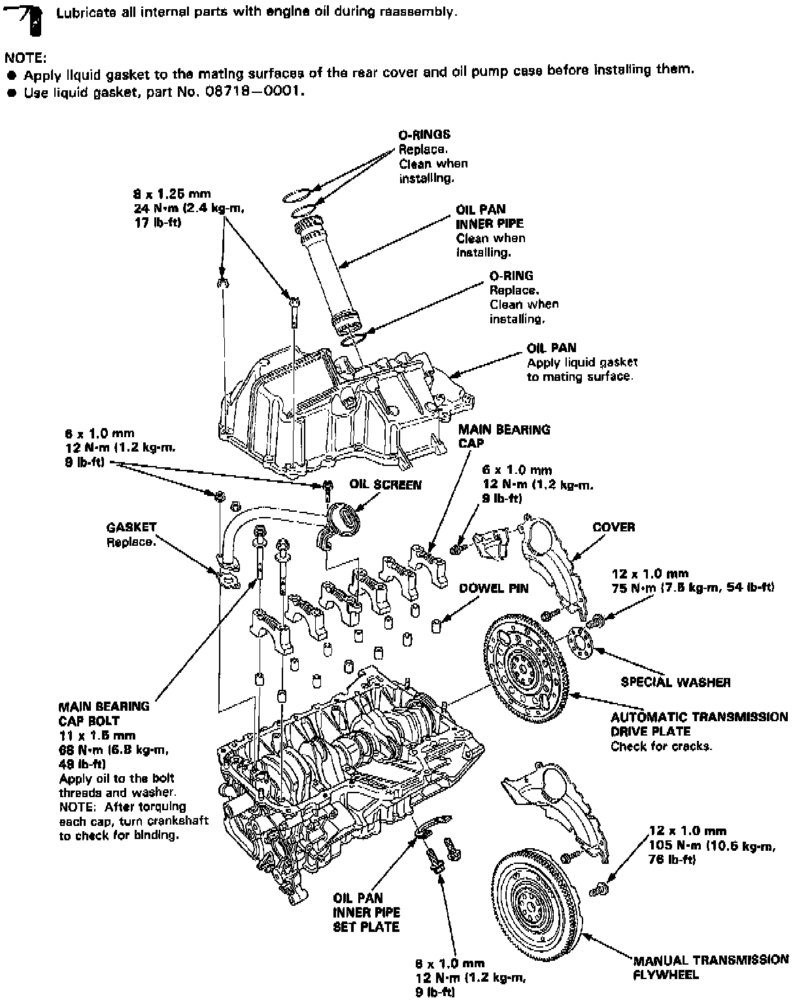
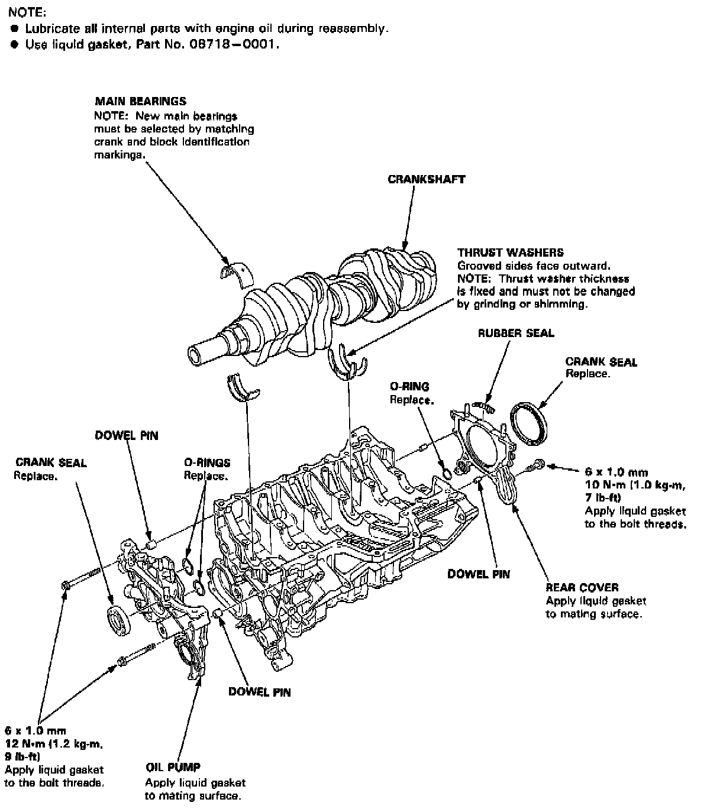
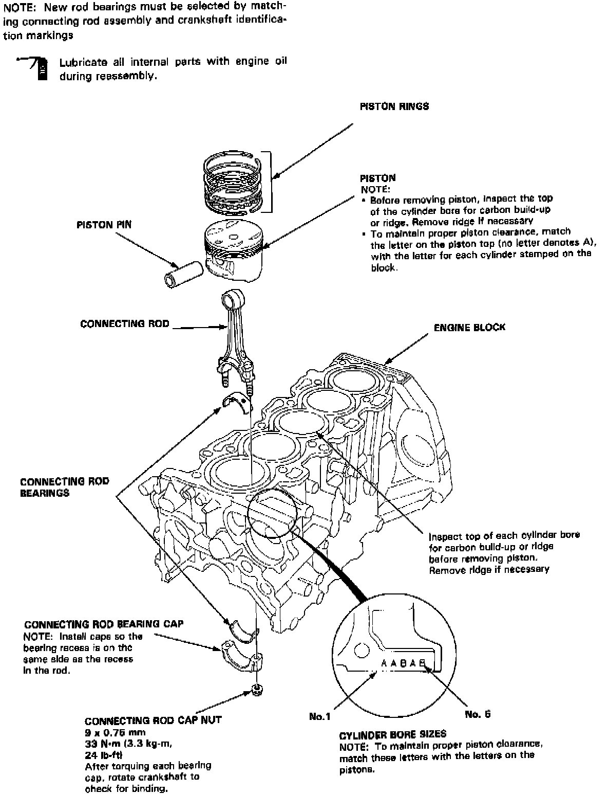
Main Torque Sequence:
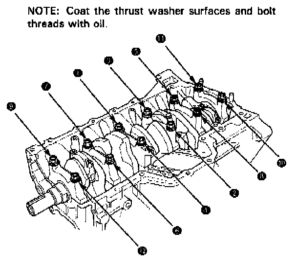
Engine Lubrication:
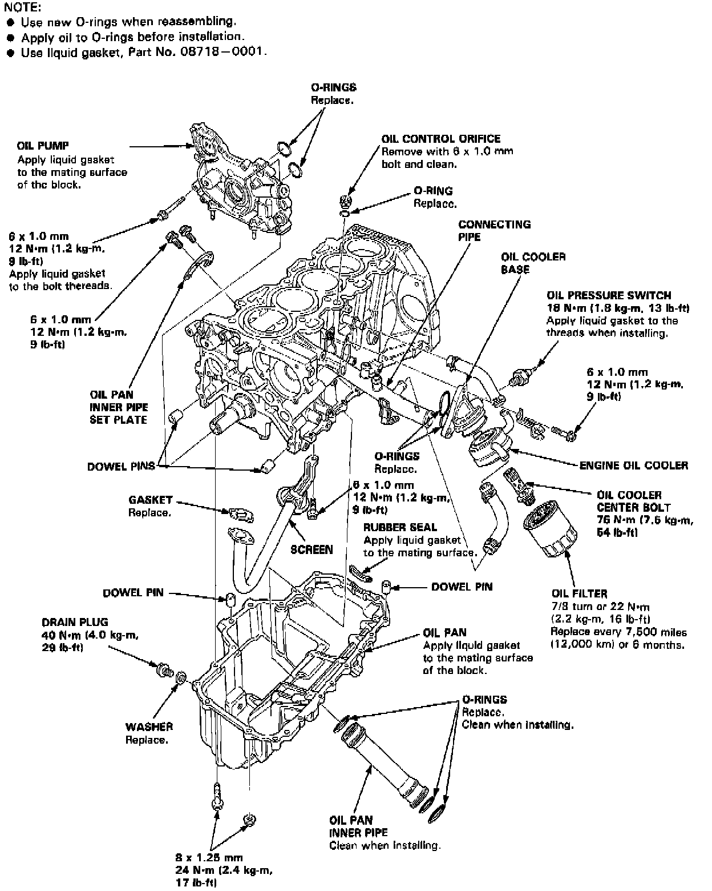
Flywheel (M/T) Torque:
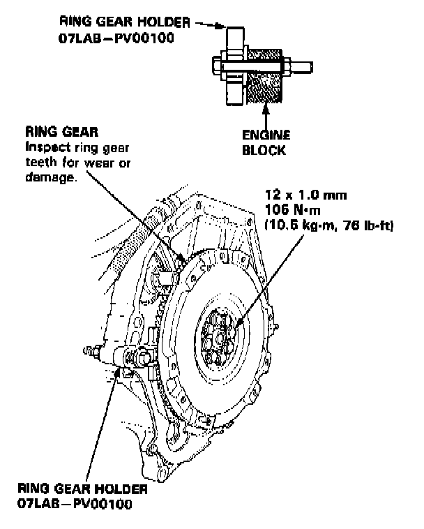
Drive Plate (A/T) Torque:
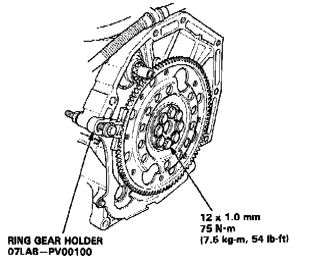